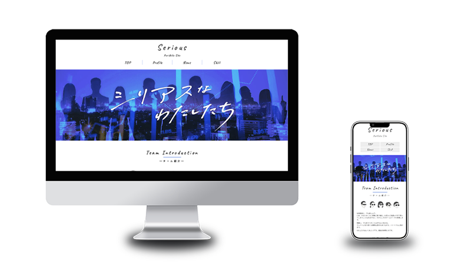

Serious

Scroll
概要
ノーコードツールSTUDIOを使用して、即席チームで自分たちを紹介するポートフォリオを作りました。
チームメンバーの性格からデザインのテーマを「シリアス」にしましたが、言葉の印象から暗く重いイメージになってしまわないように色やフォント選びに気をつけました。
サイトを見る（新しいページが開きます）＞サイトの目的
チームメンバーと、スクールで身に着けたスキルの紹介
担当箇所
全体デザイン&メインビジュアル作成・フォントの選定
ターゲット
WEB制作会社の採用担当者
製作期間
2日間（2023年10月）
制作のポイント
すっきり見やすく、スマートさを表現したかったので、余白を多めに取りました。
単に真面目さ・真剣さを表現するだけでなく、「メンバーの仲の良さ・親しみやすさ」を出すために、遊び心や軽やかさのイメージとしてイラスト風の顔写真や手書き風のフォントを使用しています。
スキル紹介は、実務経験のない私たちが「現時点で何ができるのか」ということを分かってもらいやすいように、「習熟度」や「レベル」といったあいまいな表現を避け、なるべく具体例を盛り込むようにしました。